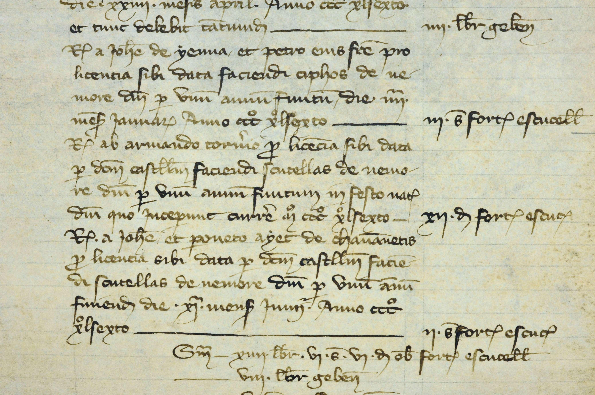

Article de l'écho des copeaux
La vaisselle, récipients de toutes formes, toutes tailles, tous matériaux destinés à stocker, travailler, servir les aliments est aussi ancienne que l'humanité. La vaisselle de terre cuite est d'ailleurs une mine de renseignements pour les archéologues qui doivent dater des vestiges très anciens. La vaisselle de bois a hélas, laissé moins de traces. Ce matériau ne se conserve dans le temps long, uniquement en atmosphère sèche et stable, ou, inversement, en milieu totalement immergé. Mises à part la vannerie et les fibres tressées, avant l'arrivée du métal, terre cuite et bois sont les deux matériaux de base pour la vaisselle.
La terre cuite exigeant une grande technicité, et beaucoup d'énergie pour la cuisson, a toujours été la vaisselle la plus luxueuse quoique la plus fragile.
Le bois est très abondant, solide, facile à travailler avec les outils coupants, en silex ou obsidienne éclatés, dont le taillant est réfectible et que l'on sait fabriquer depuis 300 000 ans. Le bois possède en outre d'excellentes qualités isolantes, appréciables dans l'alimentation. Chauffer des liquides et aliments jusqu'à cuisson peut se faire par introduction de pierres fortement chauffées à l'intérieur du récipient. Une bonne technique de coupe des fibres du bois, sans arrachage, était nécessaire pour obtenir des surfaces bien lisses et facilement nettoyables.
La toute première pièce tournée, authentifiée provient de fouilles archéologiques dans le lac de Neuchâtel (Suisse), sur le site de la Tène ; c'est une coupe*(voir plus bas) (incomplète) dotée d'une anse. Elle est datée du second âge du fer, environ 500 ans avant notre ère. Cette période correspond à la civilisation de Hallstatt.
En l'An Mil, les habitants des rives du lac de Paladru (en Isère) utilisent beaucoup de pièces en bois tourné. La montée des eaux du lac a permis leur conservation jusqu'à nous. Elles sont visibles dans une très abondante collection. La vaisselle de bois ancienne est rare ; les bonnes conditions de sa conservation ne sont pas souvent réunies. Après usage, peu de leurs utilisateurs ont conscience de sa valeur, et c'est un bon combustible… Les textes décrivant les objets ou leur fabrication sont quasiment inexistants. Qui écrit sur les objets les objets quotidiens des plus pauvres, ou sur ceux qui les fabriquent, qui sont encore plus pauvres ?
Les livres de comptes des religieux signalent parfois que telle abbaye, a acheté tels objets, à tels artisans, pour telle somme d'argent. Les archives de la justice permettent aussi de dater des condamnations pour vol de bois, ou braconnage.
Pour les Bauges, nous avons une chance exceptionnelle : un parchemin des comptes de châtellenie du Châtelard, nous donne les noms, les lieux d'exercice, la somme à régler pour utiliser le bois du seigneur afin de "tourner des écuelles", le tout est rédigé en latin ancien ! Et daté de…….1345 ! Le texte lisible est ci-joint…

*Le terme de coupe peut désigner suivant les lieux et les époques, une grande variété d'objets. Un récipient haut et étroit, genre coupe sportive ou bien, large et évasé genre coupe à fruit. Ou un bol, une écuelle…etc…Le terme de "Coppet" en patois des Bauges, désigne d’ailleurs tout récipient de taille et forme diverses.
1645, c’est l’année de la fameuse plaisanterie de l'évêque de Genève sur "l'argenterie" fabriquée en bois, dans les Bauges. Ce trait d'humour dont le pourcentage entre mépris et ironie reste à mesurer, a été, depuis repris en boucle pour se moquer des colporteurs qui étaient même souvent insultés lors de leur passage pourtant attendu. Une espèce de jeu de rôles s’organisait fréquemment…
En 1749, le révérend Père Plumier, haut ecclésiastique lyonnais et lui-même tourneur d'art, écrit un ouvrage : "L'art de tourner en perfection" Pour quels lecteurs? Les écuelliers de la forêt ne savaient probablement pas lire.
1937 la revue " L'Illustration" se déplace à St Solen (Morbihan) ; elle écrit tout un article de plusieurs pages, illustré de plusieurs photos. La famille Fauvel (le père et 2 fils) fabrique, à partir d'énormes billes de hêtre de la forêt de Coetequen, des jattes à beurre non moins énormes, vendues dans toute la Bretagne.
1850 c'est l'époque de la très forte démographie des campagnes françaises. Le hameau de la Magne, tout proche de la Féclaz, en dessus de Chambéry, compte une soixantaine de fabricants d'Argenterie, du tailleur de cuillers au couteau, jusqu’au tourneur à la perche d'ustensiles plus élaborés, écuelles, grâles, écrèmettes, collius, pôches, etc… peut être les gourdes en bois… ? Ils travaillent au village, dans les maisons. Quelques artisans travaillent ils encore en forêt ? Nul ne le sait. Ce qui est certain c’est que quelques autres tourneurs exercent aussi, dans d'autres villages aux alentours.
Au Moyen-âge, comme ailleurs en Europe, il est très probable que les écuelliers des Bauges travaillent sur place, en forêt : leur matière première est là : des arbres sur pied. La durée de rotation des coupes est de 30 ans. Les jattiers, (écuelliers, boisseliers) dont les noms différent suivant la spécialité, la région et l'époque, côtoient de nombreux autres travailleurs de la forêt : citons les charbonniers, les sabotiers, les scieurs de long, les récolteurs d'écorce, (le tan), les faiseurs de gros fagots, ceux de petits fagots, ceux de bûchettes, etc….. Tous ont leurs clients spécifiques, qui sont souvent établis en ville, et Chambéry est à quelques heures de marche !
Tous ces métiers ont en commun le triste privilège d'être littéralement bannis de la société. Des arrêtés du Moyen-âge leur interdisent la fréquentation des villes et des villages. Ils vivent donc en permanence dans le bois, avec leur famille dans une hutte. Ils se font oublier le plus possible du seigneur et de ses gardes-chasse, des gendarmes, des collecteurs d'impôts… mais aussi des curieux qui voudraient les voir travailler. Le mépris teinté de crainte dont ils font l'objet n'a d'égal que la fierté qu'ils ont de leur savoir-faire. Ils sont très conscients, et les villageois également que ce qu'ils fabriquent, avec leurs outils très simples, les sédentaires en sont bien incapables. Une nuance supplémentaire s’ajoute au mépris et à la crainte : la jalousie, cet état d'esprit, commun à l'Europe entière a franchi les siècles et demeure tout à fait d'actualité. Les fabricants de vaisselle des Bauges se disaient « tourneur ». Leur nom de la forêt, s’il a existé, n’a laissé chez nous aucune trace. Lors du passage de l’artisanat « nomade » à celui de « sédentaire », les paysans de la « Magne » qui se considéraient comme les plus riches refusaient ostensiblement de fabriquer la vaisselle. Le seuil de la richesse est alors de trois vaches ! Ce sont les paysans les plus pauvres qui seront aussi travailleurs du bois. S’ils maitrisent le tour à perche, ils peuvent produire chaque jour, sept pôches, chacune sera vendue, sans problème, à un prix correspondant à celui de quatre litres de lait. Vingt huit litres de lait chaque jour ! On parlait de jalousie ?…
La vaisselle de la "Magne" est colportée très loin (Oise, Vaucluse…..) Elle se vend certainement aussi à Chambéry à trois heures de marche ! La ville, à cette époque est déjà un lieu d'attraction pour les plus pauvres qui sont les plus grands utilisateurs de la vaisselle de bois. Cependant," les Bourgeois du Valais", cette corporation des éleveurs les plus fortunés de la vallée de Grimentz (Suisse), font exception. Lors de leurs réunions conviviales et pluriannuelles, ils dégustent leur fameux vin des glaciers uniquement dans des gobelets de bois ! Aucune autre matière plus en rapport avec leurs moyens financiers, ne convient …..Pour boire régulièrement la "mondeuse" (vin rouge, endémique du sud-ouest des Bauges) dans un gobelet de prunier, je peux témoigner d'un très bon accord du vin avec le bois. Ajoutons enfin que les réunions des Bourgeois du Valais ne sont pas du genre à générer de la casse …. !
C'est avec une grande émotion que j'ai découvert récemment un documentaire de TV5 sur les derniers peuples chasseurs-cueilleurs de la planète : Les "Raute", qui nomadisent au Népal inférieur, sur le versant Indien de Himalaya. Pour se procurer un peu d'argent (début de la décadence) et acheter du riz, ils prélèvent dans les arbres (ce qui est formellement interdit aux sédentaires) le bois qu’il leur faut ! Avec leur seule herminette, ils façonnent des récipients dont la forme hémisphérique n'a rien à envier à celle obtenue par le travail à commandes numériques. Je pense que ce documentaire exprime tout à fait l'ambiance de la forêt française des temps passés.
Elle est aisée, avec un outillage simple, depuis le silex jusqu'aux crochets en acier, en passant par l'herminette et la hache de bronze….
Le tour à perche associé au crochet, sera ensuite l'un de ces outils simples qui permet la fabrication de vaisselle facilement. L'arrivée des métaux apporte un vrai progrès en permettant la création de taillants courbes, beaucoup plus aptes au creusage ; de plus, le métal résiste aux pressions souvent nécessaires à la coupe, alors que le silex peut casser lors d’un appuie trop marqué.
Une mise en œuvre à partir du bois vert, fraîchement récolté est une constante. Elle repose sur deux impératifs :
- Les pièces finies doivent être aptes à un usage intense et prolongé. Le bois qui a séché en gros bloc présente des fentes ou des microfissures invisibles, qui s'élargiront rapidement à l'usage. Le bois sec est exclu pour la fabrication de la vaisselle.
- Le bois frais demande infiniment moins d'effort à la coupe. Le séchage se fera donc après fabrication. Il en est une phase importante qu'il faut contrôler. La pièce une fois creusée, peut se déformer, elle n'a donc pas besoin de libérer les tensions de retrait par la rupture de ses fibres. Le bois vert présente pourtant un gros inconvénient : Il n'y reste pas, vert ! Les parois de la pièce finie sont fines, et en conséquence sujettes à sécher rapidement, trop rapidement ; elles n'ont alors pas le temps de se déformer, et elles fendent ! Quitte à m'attirer les foudres des Anciens, je révèle ici l'un des grands secrets du métier de "jattier" : creuser le bois vert, puis le faire sécher lentement. Plus la pièce est fine, et le bois dur, plus le séchage doit être contrôlé et long. A de rares exceptions, les essences de bois les plus denses ont le plus de retrait au séchage. Exemple : buis, charme … Pas de soleil, ni de courant d'air mais pas trop de confinement non plus, il conduirait au développement de levures et de champignons. Pour leur résistance les pièces doivent correspondre le plus possible à l'arbre d'origine. L'expression très connue des Anciens du métier "C'est le bois qui commande" exprime tout à fait plusieurs exigences.
- L'arbre abattu doit être travaillé à brève échéance.
- Les pièces dès leur tournage réalisé doivent être surveillées.
- Enfin, très important, pour une qualité irréprochable : forme et dimension de chaque pièce doivent
correspondre le plus possible à l'arbre récolté. Elles doivent être centrées par rapport aux cernes d'accroissement du bois ce qui induira leur déformation plus harmonieuse. Si les accroissements sont dissymétriques, les différentes courbures des cernes distinguent souvent le bois de tension du bois de compression. Leur répartition dans deux pièces différentes permettra à chacune d'elle une déformation qui lui est propre.
Le tournage de la pièce commence par son extérieur. Sa forme est induite par celle du contour de l’arbre. Elle s’en approche le plus possible, jusqu’à conserver très souvent une portion d’écorce dans la pièce finie. Cette « imperfection » permet de tirer de l’ébauche une pièce du plus grand volume et qui conservera la signature de l’arbre. Ce détail a dût alimenter de nombreuses et vives discutions sur la véritable nature du bois entre les clients et les vendeurs colporteurs.
Le tournage qui apparait dans la fabrication dès l’âge du fer, n’exige que très peu de matériel, deux pointes, crochets, mandrins, herminette, hache, couteau courbe, une lanière… Il a le gros avantage de libérer les deux mains, et d’associer les muscles des jambes, les plus puissants du corps, et son poids, à l’énergie nécessaire au travail.
L’harmonie des épaisseurs dans chaque pièce enfin, joue un grand rôle. Le fond, zone d'usure, qui est constitué du bois le plus jeune et le plus tendre, doit être plus épais et les rebords plus fins, pour un poids moindre. Cette variation doit être progressive, sans brutale rupture qui serait favorable aux fentes. Les moulures décoratives étaient donc souvent exclues. Dans le cas particulier de creusage en bois de fil (mortier, gobelet…etc) le séchage est encore plus délicat. Les pièces seront le plus possible prélevées hors cœur. Elles comporteront en revanche, quand à elles, au pied, différentes moulures. Leur but premier est d'inciter le bois du fond à se déformer, dans le sens souhaité par le tourneur, et donc à ne pas se fendre. C’est très gênant pour une coupe à boire…
Toutes ces précautions pour le séchage peuvent paraître bien exagérées et superflues, mais la qualité des objets bien que cachée au cœur du matériau, est a ce prix. Il faut spécialement prendre en compte ces impératifs lors de la fabrication de nos célèbres gourdes monoxyles : les boteillons. Leur assemblage et étanchéité se font uniquement par le retrait de la couronne, tournée de fil en bois vert. Elle emboîte les deux fonds tournés en bois de travers plus sec. La perte de diamètre du pourtour, de plusieurs millimètres à plusieurs centimètres, doit se faire sans accident.
Le bois de fil, en séchant, présente un retrait très important. La maille du bois: ces innombrables canaux radiaux, en place dans l’arbre autour de sa moelle comme les poils d'un écouvillon autour de sa tige, semble jouer un grand rôle dans cette forte déformation. La maille est très riche en substances denses, de texture "cornée" à la coupe (exemple : le chêne).Elle a peut-être un rôle imprtant dans le retrait tangentiel, qui est de trois quand le retrait radial est de un.
Après le séchage, le tourneur a fini son travail, le colporteur prend le relais auprès des utilisateurs. Les pièces en vente présentent le moins de points de faiblesse possibles, mais sont soumises surtout dans les bois durs à de fortes tensions internes. Le premier contact avec de l'eau créé un gonflement qui pourrait les libérer soudainement par un éclatement, ceci dès le premier usage ! Les utilisateurs connaissaient bien ce risque. Ils prenaient donc systématiquement la précaution de "culotter" leur pièce neuve. L'imprégnation à l'huile de noix était la plus courante. Le lait, avec sa caséine convenait aussi, ainsi qu'une infinité d'autres recettes, chez nous comme de par le monde. Une part de mysticité pouvait même s'inviter dans cette opération... Lors de l'achat de la "pôche neuve" annuelle, la "Mère Ballaz", du Cimeteret ne voyait rien de mieux pour le premier usage, que de brasser le sang du cochon pour le boudin !
C'est un arbre fraîchement et soigneusement récolté. Dans les peuplements réguliers ils sont plus appréciés ; leur bois est plus homogène que celui des arbres isolés, trop branchus. L'arbre est maintenu intact après sa coupe, il conserve ainsi son enveloppe protectrice, l'écorce. Elle évitera que le bois ne soit "infecté" selon l'expression des anciens. Chez nous comme dans le monde entier, l'érable sycomore était particulièrement prisé. Avec lui, il faut être encore plus soigneux. En bille, et sans soins, quelques jours suffisent pour que des traînées grises ou des pointillés verts envahissent le bois. Les clients de l'ancien temps refusaient ce bois tâché. Il fallait le blanc immaculé, même si le premier usage entraînait inexorablement des voiles grisâtres. Les ébauches, localement dénommées "lévo", sont prélevées en bout de bille, au fur et à mesure du "bâclage"(ébauchage), puis du tournage des pièces. Entre temps, bien sûr, le nez de la bille est à nouveau protégé du soleil, du vent et de "l'infection"… Mentionnons ici une pratique qui a également existé, particulièrement en Angleterre : le travail du bois échauffé. L'arbre abattu, maintenu en bille, en forêt ne sèche pas, ni ne pourri vraiment, on dit qu'il "s'échauffe". Les cellules ligneuses se déstructurent, Le creusage n'en est que plus facile. Déformation et risques de fentes au séchage sont pratiquement inexistants. Le bois est plus mou, donc la pièce s'use plus vite, elle peut aussi s'orner de magnifiques marbrures !...Les Anglais que l’ont dit pragmatiques travaillaient et travaillent encore souvent de cette façon. La préparation volontaire de l'échauffement d'une bille de bois demande toutefois patience et savoir-faire. George Layley, l'un des derniers tourneurs de vaisselle anglais, qui travaillait en gilet, veston, et chapeau melon, disait tourner ses écuelles en orme après trois ans de séchage ! Intox…? mauvaise traduction...? Deux à trois années de macération de la bille d’orme semble bien plus vraisemblable. Quiconque a déjà tourné une écuelle en orme bien sec, comprendra…!
Les essences de bois utilisées sont toutes celles disponibles dans la forêt. Sapin, épicéa, tremble sont utilisés pour les pièces "chaudes", (très isolantes). Des grands récipients de 60 cm de diamètre pour 30 de profondeur, les "épaillus" étaient creusés. Ils étaient utilisés pour la fabrication du pain. De mêmes dimensions, mais en bois plus durs, ce sont les "grâles" dans lesquelles le lait reposait une nuit. Une grande cuillère très plate, "l'écrémette" à manche court et bords très fins était tournée pour araser la crème, en surface, le matin. Quelques bois, trop tanniques ou "toxiques" sont évités. Les érables, abondants chez nous (5 espèces sans compter les hybrides) sont, ainsi que de tout temps, et dans le monde entier, majoritairement utilisés pour la vaisselle. Pourquoi ? L’une des raisons nous est peut-être donnée par une récente étude scientifique suisse. Elle révèle une très bonne aptitude de l'érable à neutraliser les bactéries. Elle le est double de celle du hêtre… La blancheur éclatante de l'érable, surtout du sycomore, était très appréciée par les clients des colporteurs de l'argenterie des Bauges. Cette blancheur est, toutefois, très éphémère: en effet ce bois se tache en gris noir dès le premier contact avec l’eau, le vin, le métal… bref, à l'usage. Les gourdes et "pôches" neuves sont magnifiques de blancheur. Après usage, elles sont toujours magnifiques, mais de patine brun-noir qui vient progressivement. Dans le choix d'une pièce d'érable, il vaut beaucoup mieux la choisir d'une couleur "beurre frais", celle de la sève oxydée en surface. Un objet d'une très/trop grande blancheur est obtenu par un séchage très/trop rapide, entraînant ces fatales microfissures invisibles. A l'usage, le premier choix deviendra gris, le second sera fissuré, voire fendu ! Il semble intéressant aussi de s’interroger sur un certain nombre d'idées reçues sur le choix des espèces d’arbres. Deux exemples parmi d'autres.
- L'if : traditionnellement, les Irlandais en font les douelles de leurs seaux. La raison ? Rituelle ? Culturelle ? Sa résistance au pourrissement ? La finesse de son grain ? La prévention du cancer …? Le Taxol présent dans son bois, soigne les gens du cancer à faible dose mais les tue à forte dose (tonneaux pour vieillir le vin de porto au Portugal, au 15° siècle)
- Le hêtre : en 1937, la famille Fauvel à St Solen, (Morbihan) tourne, en hêtre, d'énormes jattes à beurre utilisées dans la région. La raison ? : Affinité du beurre avec le "fagus" ? Abondance de magnifiques billes de hêtre dans cette forêt ? La facilitée de la bille à se fendre, d'abord en deux, puis, les pièces étant creusées en gigogne, lors de leur séparation les unes des autres. peut être ces trois raisons...?
En fait, les artisans travaillaient le bois disponible, sans trop d'exigence pour l'essence de bois. Nombre de "pôches" vendues et certifiées pour de l'érable étaient en fait en fayard. Et l’on doit certainement trouver encore des jattes à beurre bretonnes certifiées en hêtre et qui n'en sont pas du tout….
Les tours conservés sont rare. Seuls subsistent ceux de l’époque de la sédentarisation du métier. Ceux qui étaient utilisés en forêt ont disparu. Quels étaient-ils ? Comment fonctionnaient-ils ? Seule l’archéologie expérimentale peut y répondre. Je peux affirmer avec certitude que l’on peut bien tourner de la vaisselle de taille importante au tour à perche et au crochet, avec un montage très simple et éphémère. Voici la description de l’un d’eux, que j’ai personnellement expérimenté le 8 septembre 2006 au village de l’an mil a Melrand (Morbihan). Une petite vidéo de ce travail est disponible sur la plateforme Youtube. Les tourneurs itinérants de Galice (Espagne) qui, de village en village tournaient la vaisselle à façon, devaient d’ailleurs se construire des tours assez semblables.
Voici comment construire un tour, tel qu’il pouvait fonctionner au Moyen-âge et même a l'age du fer dans la forêt :
Arrivé dans le bois, choisir deux petits arbres, d’une quinzaine de centimètres de diamètre, séparés l’un de l’autre d’une cinquantaine de centimètres. Insérer dans leur tronc en face à face deux pointes de bois dur (buis, cormier…). Ces deux pointes pourront se rapprocher l'une de l'autre pour serrer le mandrin planté dans l’ébauche. Le mandrin est un simple cylindre de bois muni de griffes à une extrémité. Il comporte à l’autre bout un petit logement central graissé pour loger une pointe, l’autre servira à la rotation sur l’ébauche. Un mandrin gros de quatre centimètres est capable d’entrainer une pièce en bois frais de travers de trente centimètres de diamètre et de la creuser au crochet. Sur cette base du tour, voici les accessoires : un grand rameau voisin (la perche) que l’on courbe pour fixer à sa tête une lanière. Cette lanière fait un ou deux tours morts sur le mandrin puis rejoint une branche, posée au sol. C’est la pédale, actionnée par le pied. Encore quelques petits tronçons bien rigides de branche, différemment insérés dans les arbres, dans le sol, ou les deux ! Ils serviront d’appui intermédiaire au crochet. On peut travailler ainsi, c’est sûr ! Ça a été fait !
Les tours de l’époque « sédentaire » sont beaucoup mieux connus. Ils fonctionnent comme décrit précédemment. Le musée de Reading (GB) en présente toute une collection. Dans les Bauges, ce massif calcaire préalpin situé entre Chartreuse et Aravis mais moins connu, seul le tour de Lucien Pernet subsiste. Il l’a utilisé comme si il avait travaillé en forêt jusqu’en 1920, puis, après l’arrivée de électricité, de façon moins pénible. Il l’a adapté à la motricité électrique, de façon réversible, tout simplement. Il a même poussé l’ingéniosité (la coquetterie ?) en installant une fourchette d’embrayage… Il faut noter que le tour de Lucien est vraiment identique à ceux du musée de Reading. Qui est le copieur ? Qui est le copié ?
Le tour a perche possède des possibilités très vastes : il est simple a mettre en œuvre (deux arbres), il est puissant (diamètre quarante centimètres et plus en bois de travers), il peut couper des portions de cercle (exemple: trois quarts de tours qui ménage le manche de la pôche des Bauges ou l’anse et le bec des pichets en bois de fil de Galice). Il peut couper le bois toujours a bon fil, quart de tour par quart de tour : (sur le coup de pédale, ou au contraire sur le retour de la perche). Il peut couper aussi sur plusieurs tours dans un sens ou dans l’autre… Nous verrons plus loin qu’il permet parfaitement et sans danger l’initiation à la conduite du crochet. Il est très bon « professeur de crochet ». Enfin, dernière possibilité, soit notoirement connue ? Soit oubliée ? Soit inventée ? Soit délirée ?! La possibilité d’une rotation certes discontinue, mais toujours dans le même sens, sans retours en arrière. Pour le creusage d’ébauches pouvant peser une dizaine de kilos, creusées en gigognes, ça semble très utile... Le système pour assurer la rotation toujours dans le même sens est très simple, mais je ne le révélerais pas ici afin de déposer un brevet le cas échéant…😉(mais n'oublions pas que l'usage date de plusieurs millénaires)
On ne peut décrire le tour à perche destiné à la vaisselle, sans l’outil qui lui est intimement associé : le crochet. Le révérend père Plumier dans son ouvrage de 1749, destiné aux tourneurs d’art de la haute société le mentionne incidemment de la façon suivante.
L’auteur a très bien décrit sa forme, son usage, son premier emploi, son efficacité. Toutefois on se demande ce que signifie pour lui « bon que pour de gros ouvrages » gros par la taille ? Ou par l’aspect, grossier ? Quand il parle des « Italiens », a t-il connaissance des jattiers des Bauges, ou de ceux du Val d’Aoste ? À cette époque tous étaient des sujets du royaume de Piémont Sardaigne...? Pour ce qui est de sa dénomination de « Grampino » : grand mystère. Lui seul semble la connaître. Le crochet a l’avantage de se forger assez facilement avec très peu de fer. Ce fer, on le fabriquait à la même époque, et dans la même forêt que celle des jattiers. On sait le transformer en acier par ajout de carbone (corne, suie) on peut le forger. Du charbon de bois, un soufflet, un marteau et une enclume, (a défaut deux galets de quartzite). Et c’est faisable ! La longueur et la masse du crochet permettent de remédier au fait que l’appui intermédiaire (le porte outil) du tour pour la vaisselle (à perche), est très sommaire, et peu réglable. Le porte outil du tour pour les barreaux de chaise et balustres, qui, plus proche et parallèle à la pièce, ce prête mieux à l’usage de gouges ou de planes. La grande longueur du crochet permet de placer sa partie coupante exactement au point de tangence sur la pièce, avec une bonne pression, et un bon angle. C’est l’appui principal (primaire) : celui de la dépouille du tranchant sur le bois. Le troisième appui du crochet est son manche massif, lui-même tenu par la main arrière. Cette main arrière est elle même souvent calée à la hanche, l’épaule, l’oreille, ou le front du tourneur… L’angle de taillant très fin du crochet et son bon appui de sa face de dépouille fait qu’il rase très bien les deux contre fils. Il se réaffute lors du retour en arrière de la pièce. Non… j’exagère ! Mais à peine. À la surface de la coupe subsistent de petites crêtes qui séparent les passes du taillant à chaque tour. En effet la rotation n’est pas très rapide, à la pédale. Ces petites crêtes pourront être fortement réduites en employant pour la dernière passe le « paru ». C’est un crochet au taillant encore plus fin, d’un rayon de courbure plus grand et dont le traitement thermique a été très bien réussi. Il est réservé à cet usage et ne laisse que de faibles crêtes qui peuvent être conservées telles quelles. Si elles sont trop mal venues et qu’on veut les supprimer, rien de plus facile, il suffit de les « racler » hors tour, avec le couteau courbe, quart de tour part quart de tour, toujours dans le sens du fil. L’inconvénient de la coupe du crochet au tour à perche dans le bois vert de travers est le suivant : La vitesse de coupe est faible, à chaque quart de tour, le taillant change d’angle d’attaque par rapport au fil du bois, et l’angle d’incidence ne peut changer à chaque quart de tour. Pour les deux contrefils, il est trop grand, l’outil engage un tout petit peu, il est attiré par le bois. Pour les deux fils il est trop faible, l’outil refuse, il est à peine repoussé par le bois. Bien que parfaitement coupée, la pièce est très légèrement ovale dès la sortie du tour, et encore bien plus après séchage ! Même phénomène à la rencontre d’un point dur dans la pièce (nœud). La dépouille de l’outil est repoussée à sa première rencontre, puis encore à la seconde, et à la troisième … Il en résulte une vaguelette qui s’atténue en spirale. Si l’on tourne en continu au moteur, un phénomène de résonnance s’ajoute. En fonction de la vitesse de rotation de la pièce, de la masse du crochet, de son angle de glisse, le taillant se recale d’une vague sur l’autre et créé une frise en spirale parfaitement coupée. On peut, en jouant sur ces paramètres affiner cette spirale ou la supprimer. La tentation est grande, au moteur de faire varier la vitesse de coupe et de l’augmenter. Il vaut mieux éviter ! En effet, le taillant très fin du crochet pourrait surchauffer et « griller » sur un bois un peu trop sec. D’autre part, la glisse du crochet sur le bois se pilote un peu comme une planche de surf dans la neige poudreuse, si la vitesse est trop grande, gare a l’accident ! Une vitesse faible, celle de la coupe au tour à perche, associée à un nombre de tours limités (généralement de trois à cinq) permet au tourneur de bien sentir ce qui se passe pendant cette conduite de la glisse. Le crochet vous donne des informations : Durant les quelques rotations liées à un coup de pédale, si les paramètres de coupe ne sont pas tout à fait justes au départ, le taillant est entrainé par le bois dans une légère dérive. On la perçoit par le manche de l’outil. On peut alors rectifier au coup de pédale suivant. Le tourneur prend aussi conscience de la nécessité impérative de changer imperceptiblement la position de l’outil entre deux cycles de coupe de la pédale, à chaque fois, et systématiquement. Oui, le tour à perche est un excellent professeur, calme, mais intransigeant ! Les objets de volume importants, constituant la vaisselle, étaient sur l’emplacement de coupe directement issus des arbres, puis tournés avec ces outils. Ils sont seuls capables de le faire. Le taillant très fin du crochet, placé en extrême tangence n’exerce que peu d’efforts parasites qui tendent à arracher la pièce de sa fixation. C’est particulièrement appréciable pour le bois vert qui est mou et ne peut se brider sauvagement. Dans le cas d’un tour mécanique, un crochet bien tenu pousse la pièce dans les mors au lieu de l’en arracher.
Le système de tournage alternatif présente nombres d’atouts et l’ont peut s’interroger sur sa disparition. Une faille dans la transmission ? Elle se faisait de père en fils plutôt, que par l’apprentissage. Le souci impérieux des artisans à ne pas dévoiler leur technique ? (« le métier se vole avec les yeux »). Une autre cause est également à envisager. Chacun sait qu’un métier est intimement associé à un outil et vice versa, tour a perche et crochets étaient les outils des « faiseurs d’écuelles » ces bannis de la forêt… le tour à pédale et manivelle qui tourne en continu est utilisé par les lecteurs du Révérend Père Plumier. C’est aussi l’un d’eux que Pierre Le Grand offre à Louis XV, tourneur lui aussi à ses heures. Les gravures du « manuel des tourneurs » d’Hamelin Bergeron représentent des ateliers de tourneurs. Le système à perche est présent. La hauteur de pointe suggère toutefois une utilisation en bois de fil. Le tour à manivelle et volant est lui aussi représenté. La petite taille de ces volants, inclus dans le tour, ne permet toutefois pas une puissance de coupe importante exigée pour la vaisselle. Cette puissance peut être apportée par des volants indépendants du tour, de taille beaucoup plus importante, mais qui doivent être nécessairement actionnés par une autre personne que le tourneur, l’apprenti le plus souvent.
Non ! le tour à manivelle et volant d’inertie n’est pas une révolution technique par rapport au tour à perche. Le merveilleux Musée des Tourneurs sur bois d’Aiguines dans sa présentation pouvait le suggérer. J’ai donc proposé à leur réflexion un document comparatif des deux systèmes. Il est impartial (enfin, je crois…) et sans équivoque. Ce document est visible au musée depuis deux ou trois ans, mais n’a pas à ce jour suscité la moindre réaction.
Le tourneur travaille avec son maître dans un atelier, du faubourg Saint Antoine. Il tourne, entre autre les colonnes d’ébène qui ornent les lits à rouleaux des bourgeois. Il fait partie d’une corporation, il est lecteur des ouvrages de Plumier et de Bergeron. Il a appris son métier par apprentissage chez un maitre. Cet apprentissage est d’ailleurs plus long d’une année que celui des autres métiers du bois. Ses outils sont ceux du bois sec, éventuellement de l’os ou de l’ivoire. Ils travaillent beaucoup avec des taillants épais qui enlèvent des copeaux minces, au tour à manivelle surtout.
L’écuellier travaille en forêt du Peney, sa famille loge dans une hutte voisine. Il fabrique les écuelles en plane que les mendiants de Chambéry tendront à la marmite de la soupe populaire. Ces artisans sont d’une indépendance farouche. Chacun est persuadé d’avoir la meilleure technique et le crochet le plus performant. Ils ignorent corporations, patentes et impôts. Le fils apprend avec son père, qui avait appris avec son père… gage s’il en est d’ouverture d’esprit. Ils ne savent pas lire. Ils ignorent donc que leur outil s’appelle le Grampino… Leurs outils, dans le bois vert doivent raser le matériau en souplesse. Les biseaux des taillants sont très fins, ils glissent. Leur tour exige une grande puissance : c’est le tour à perche.
En fait, ces deux systèmes et leurs outils correspondent à deux métiers très différents, sinon opposés.
Il faut bien prendre conscience de l’infinie variété des modes de coupe d’un outil dans un matériau. Voici deux exemples, à l’extrême opposé, liés au tournage :
- Le tour a métaux. La pièce à tourner, un cylindre d’acier, et l’outil, une pastille de carbure évoluent indépendamment. Ils ne se rencontrent que ponctuellement, au point de coupe.
- Le tour à vaisselle de bois vert. Le bloc de bois frais à couper et la lame fine du crochet interagissent. L’un s’appuie sur l’autre. Le rôle du tourneur est de gérer la bonne conduite de ces réactions.
Encore deux image pour illustrer ces extrêmes :
L’outil qui doit séparer les différentes sphères d’une boule de canton devra le plus possible éviter de créer des « vaguelettes sur les points durs » !
Le crochet du jattier au fond d’une « grâle » en bois vert ne se soucie pas du tout du plan de référence de l’axe de rotation !
Il existe une infinité de genres de coupe entre les deux extrémités de cet éventail. L’artisan devra apparier le mieux possible le matériau et l’outil qui le coupe, en fonction du travail souhaité.
Ceci est valable quel que soit le métier : du tailleur de pierre au barbier, en passant par le tourneur…
Pour l’ensemble de ces métiers il existe des fondamentaux de la coupe. La pratique m’a permis d’acquérir une petite expérience dans ce domaine, ainsi que dans l’affutage des divers outils. Je pourrais la partager le cas échéant.
De nos jours la fabrication de vaisselle des Bauges ironiquement dénommée « argenterie » depuis 1645 est assimilée, par ignorance et/ou paresse intellectuelle à du tournage a « l’ancienne ». Cette assimilation suscite immédiatement affliction profonde et pitié … Il suffit de se déplacer dans le Jura ou à Aiguines pour mesurer l’abyme qui sépare les deux productions. Toutes deux sont éminemment respectables, mais en fait, tourneur « d’art » et jattier écuellier n’ont en commun que de façonner avec un outil coupant tenu à la main, du bois qui tourne, le matériau pour l’un, un arbre pour l’autre.
Cet article consacré à la vaisselle de bois que je fabrique depuis longtemps, à la suite des « tourneurs des Bauges » a conduit à bien distinguer deux types d’artisanat. Le métier de tourneur d’art est actuellement dans le monde anglo-saxon et en France en pleine expansion, avec des types de pièces qui se ressemblent beaucoup. Le métier d’écuellier était devenu très rare, et mon travail au tour à perche était systématiquement baptisé de tournage à l’ancienne. Ce métier de jattier est assez exigeant pour la conduite du crochet, mais quel plaisir de piloter sa glisse dans le bois vert, on conduit par son action des courbes dont le galbe et la précision n’ont rien à envier à celles des skis dans la neige poudreuse. Elles sont en revanche beaucoup plus durables… Ce métier est enfin tout a fait en accord avec les concepts à la mode : d’énergie grise, bilan carbone, empreinte environnementale, sobriété heureuse…
Nul doute que sa pratique va exploser lors du retour à la vie d’avant…
Jean Paul ROSSI
(Converti au format numérique par Liam ROSSI)
28/12/2020
")
 du Révérend Père Plumier")